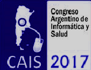

Congreso Argentino de Informática y Salud (CAIS 2017)
Llamado Preliminar a Presentación de Trabajos
XLIII CLEI / 46 JAIIO
Organiza: UTN-FRC, SADIO, CLEI
4-8 de Septiembre de 2017
Córdoba, Argentina
CAIS - 8º Congreso Argentino de Informática y Salud “Informática y salud federal”

CLEI y SADIO co-organizan este evento que reúne a la comunidad latinoamericana en general y a la argentina en particular y propone un abordaje interdisciplinario a las problemáticas y prácticas socio-técnicas que emergen del rápido avance de las tecnologías de la información y la comunicación en la sociedad.
Formando parte de las CLEI, se desarrollará el 8º Congreso Argentino de Informática en Salud (CAIS), en cuya organización participan la Asociación Argentina de Informática Médica (AAIM), la Asociación HL7 Argentina, la Sociedad Argentina de Bioingeniería (SABI), y la Sociedad Argentina de Informática (SADIO), desde sus orígenes es el ámbito natural, en donde los distintos actores que constituyen el amplio espectro de la informática aplicada a la salud, comparten ideas, conocimientos, aportes y experiencias. Es un espacio donde confluyen participantes provenientes de diversas ubicaciones geográficas, de distintas disciplinas, con presencia del Estado, del sector privado, del ámbito académico, comercial y profesional.
En esta nueva instancia del CAIS, se destacarán los avances de la tecnología de la información, que brinden herramientas a los proveedores de atención sanitaria, y a todos los actores del cuidado de la salud, a los efectos de aumentar la productividad del equipo de salud, mejorando la calidad de los procesos de atención médica. El foco particular de esta edición se pondrá en el conocimiento de los proyectos y desarrollos para federalizar la informática en salud.
Por tal motivo, se pasará revista a los distintos desarrollos y aplicaciones de las Tecnologías de la Información (TICs), las cuales se potencian al funcionar en forma integrada, por medio de la interoperabilidad y la adopción de estándares que permita el intercambio de información entre las distintas aplicaciones y sistemas utilizados en el contexto de las organizaciones del cuidado de la salud, privadas y estatales.
Llamado a Presentación de Trabajos Científicos
Se invita a la presentación de trabajos científicos enmarcados en la temática tradicional del CAIS, “Informática y Salud”. Como es habitual, se estimula el envío de trabajos vinculados a las áreas temáticas tradicionales de nuestro Congreso:
-
Salud y Gestión Clínica.
-
Registros Médicos Electrónicos - Historia Clínica Electrónica.
-
Sistemas de Información en Salud.
-
Informática en Salud y Multimedia.
-
Soporte a la toma de decisiones (CDSS) aplicados a la salud.
-
Representación y gestión del conocimiento en salud.
-
Educación en Informática en Salud.
-
Informática centrada en el paciente.
-
Bioinformática.
-
Estándares, Interoperabilidad y Regulaciones aplicados a la informática en salud.
-
Informática en Enfermería.
-
Imágenes Médicas – Telemedicina.
-
Tecnología móvil aplicada a la Salud.
-
Ontologías aplicadas a la Salud.
-
Inteligencia artificial aplicada a la Salud.
-
Explotación de la información, minería de datos, tableros de control aplicados a la salud.
-
Modelado y optimización de procesos clínicos y sanitarios.
-
Portal personal de salud
-
Prescripción electrónica de medicamentos
-
UX en salud
Los trabajos deberán incluir un "Abstract" de hasta 200 palabras que debe incluirse en la sección correspondiente de la plantilla descargable indicada más abajo. El formato de los trabajos es Microsoft Word o compatibles (.doc/.docx), conforme al diseño que se encuentra en el siguiente link: http://www.clei2017-46jaiio.sadio.org.ar/formatos
El formato especificado por el documento es de uso obligatorio.
Los trabajos pueden estar escritos en español, portugués o inglés.
Los trabajos que involucren aplicativos y sean admitidos para su presentación en el Congreso podrán participar en una sesión de demostración en el CAIS 2017. El comité de programa revisará la pertinencia en cada caso y lo comunicará a los autores para coordinar las actividades durante el evento.
Los mejores papers serán invitados para su publicación en la Revista Electrónica de SADIO (http://www.sadio.org.ar/ejs/)
Instrucciones para el envío de trabajos
El envío de trabajos al CAIS 2017 o a cualquiera de los simposios de las 46 JAIIO se hace por medio del Sistema de Gestión de Trabajos de SADIO.
Para enviar su trabajo necesita estar registrado (o registrarse) y acceder al sistema. Para resolver cualquier duda, tiene a su disposición las instrucciones para obtención de credenciales y acceso al sistema de envío de trabajos en la página:
Para acceder directamente al Sistema, vaya a: sgc.sadio.org.ar.
Tipos de presentaciones
1. Full paper: se trata de un trabajo tradicional con aportes originales y/o innovadores, con una extensión máxima de 14 páginas. Exposición oral dentro del simposio. El manuscrito completo se incluye en los Proceedings.
2. Demostraciones (Demo): el envío debe incluir (i) un resumen extendido de no más de 1 página que informe acerca de una aplicación o proceso que incluya: una descripción sintética y sus objetivos, problemas que resuelve, audiencia de usuarios a los que está destinada, y tecnología utilizada y (ii) una URL de una versión de la demo si corresponde, si ésta se puede ejecutar en línea o, alternativamente una dirección URL con un video que muestre las principales características de la misma. Las Demostraciones presentarán resultados de proyectos de investigación, así como de desarrollo de aplicaciones o procesos particularmente innovadores en empresas privadas o por profesionales independientes. El abstract se incluye en los Proceedings.
Formatos para el envío de trabajos
Por favor referirse a la siguiente página para mayores detalles y ejemplos de formato para el envío de trabajos: http://www.clei2017-46jaiio.sadio.org.ar/formatos
Fechas importantes:
Fecha límite para la recepción de trabajos: 14 de abril de 2017 Prorrogado al 30/04/2017
Notificación aceptación: 20/06/2017
Recepción versiones finales e inscripción autores: 25/07/2017
Realización de la 43 CLEI / 46 JAIIO - 4 al 8 de Septiembre de 2017
Realización del CAIS 2017 - 4 al 6 de Septiembre de 2017
Chairs
Matías Manzotti (Hospital Alemán - Argentina)
Santiago Wassermann (INSSJP - Argentina)
Comité de programa
El Comité de Programa estará conformado por prestigiosos miembros del ámbito académico, científico y profesional de la Informática en Salud.
Comité organizador
Alan March (Asociación Argentina de Informática Médica, Argentina)
Martín M. Díaz Maffini (Sociedad Argentina de Informática, Argentina)
Dionisio Leonardo Der Jachadurian (Departamento de Salud Pública - Facultad de Medicina - Universidad de Buenos Aires - Argentina)
Javier Díaz (Instituto Nacional de Servicios Sociales para Jubilados y Pensionados - INSSJP, Argentina)
Rodrigo del Mónaco (Ministerio de Salud de la Nación, Argentina)
Para información y contactos:
Correo electrónico: cais2017@sadio.org.ar. Sitio web: www.clei2017-46jaiio.sadio.org.ar
Presentaciones Comerciales y Stands:
Los interesados pueden comunicarse con la Ing. Alejandra Villa al (011) 4371-5755 o por mail a informacion@sadio.org.ar
Sistema de gestión de conferencias de SADIO
Los envíos se recibirán mediante el sistema de gestión de conferencias de SADIO. Para enviar su contribución puede utilizar el siguiente enlace directo:
CAIS - 8º Congreso Argentino de Informática y Salud “Informática y salud federal”: http://sgc.sadio.org.ar/sgc/index.php/46JAIIO/CAIS2017/index
Puede encontrar una guía e instrucciones adicionales en el menú "Envío de trabajos"